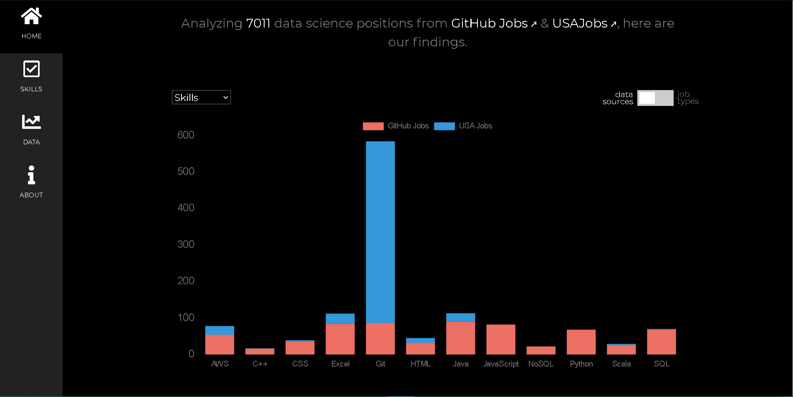
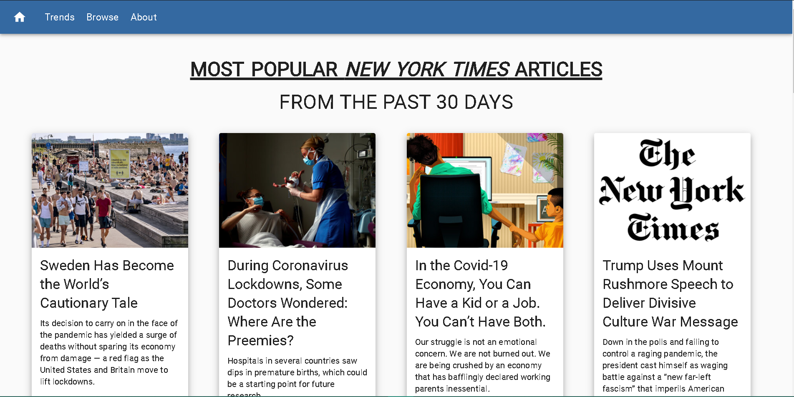

ABOUT ME
I strive to maximize output by incorporating innovative technologies
Welcome to my website! Please feel free to download my resume here
or within the menu above at any time. My GitHub repo and LinkedIn profile can also be accessed within the menu.
I am a DePaul University alumnus awarded with a degree in Computer Science and a minor in Sound Recording.
A couple hobbies of mine include; long distance running, hiking,
producing music and developing
software applications.
DPU 2020 | Computer Science
Brandon Hernandez
Data drives many industries today. It is integral to know how to properly analyze and present data so such
industries can detect anomalies, inform end users and confidently make decisions. As such, I find it incumbent
to familiarize myself with ETL and analytic methodologies to grow within the data science field. Furthermore,
realizing how to extrapolate, map and predict data is also very important. Which, is why I intend to gain
experience in programming AI/ML systems. Some of my favorite web sites that help me stay informed on the latest
frameworks, programming technologies and datasets include;
Skills & Technologies:
Python
JS, HTML5, CSS3
Java
Projects & Experience
Click on an image to navigate to a project.
Feel free to view or download the pdf!
USJobs API + Charts.js + DynamoDB

React MUI + NYT API + Charts.js
